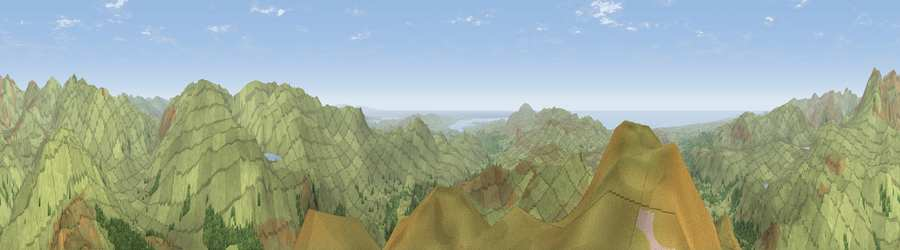

Harter Fell
#1004 in England · top 10% of its area beats it · near SeathwaiteThe view, rendered

A 360° render of this exact spot computed from the terrain model, tree cover and land cover — summer colours, afternoon light, calibrated against photographs of famous viewpoints. Real trees, hedges and buildings will differ in detail.
The panorama
Grey silhouette: terrain skyline in each direction (720 bearings, Earth curvature and refraction included). Dashed green: skyline with trees (+15 m) and buildings (+8 m) as obstacles. Blue strip: how far the ground is visible on each bearing.
Where the view opens
Wedge length = distance to the farthest visible ground on that bearing (vegetation-aware). Rings at 10, 25 and 50 km.
What fills the view
90% grassland · 7% woodland · 2% water
Angular shares of the visible panorama (visual magnitude), not map area. Landscape diversity 0.17 (0–1 Shannon).
Key numbers
More beautiful places nearby
The staircase of upgrades: each row has a higher view potential than everything closer. Driving times are estimates from straight-line distance, calibrated against real road routing — check an actual route before setting out.
| Place | Direction | Drive | Score |
|---|---|---|---|
| Viewpoint near Coniston | E · 4 km | ~9 min | 82.0 |
| Dow Crag | ESE · 5 km | ~10 min | 83.8 |
| Buck Pike | ESE · 5 km | ~11 min | 84.2 |
| Old Man of Coniston | ESE · 6 km | ~12 min | 85.2 |
| Illgill Head | NW · 7 km | ~15 min | 88.4 |
| Viewpoint near Boot | NW · 8 km | ~15 min | 88.9 |
| Crag Fell | NW · 19 km | ~33 min | 89.1 |
| Viewpoint near Finsthwaite | ESE · 20 km | ~34 min | 90.3 |
54.38655, -3.20413 · source: osm peak · position refined by local search. Computed location — check access rights before visiting.